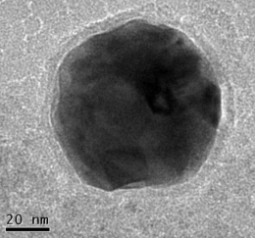

Nanopowder synthesis plays a big role for the Window to the Brain project. The group uses YSZ nanoparticles as a precursor to the densified implant. YSZ is ideal for this application due to its structural and optical properties, and its well-established biocompatibility.
Nanopowder synthesis is an area where the group focuses on developing the next generation of researchers. The group uses a novel process to create the nanoparticles so it is a great experience for undergraduate researchers. C-SAMBA faculty and undergraduates work together to create 10nm particles using an aerosol process. The current goal for the team is to scale up production of the nanopowders to 1 gram of nanopowder per day.
The team also synthesizes Zinc oxide nanoparticles, which possess antibacterial properties. These nanoparticles are being investigated for use as an anti-bacterial coating for the YSZ implants, to help mitigate the possibility for infection following surgical implantation.
The team also synthesizes molybdenum carbide nanoparticles encapsulated by graphitized carbon layers. The molybdenum carbide nanoparticles are used for thermal management applications due to its thermal and chemical stability.
Molybdenum is being studied for its biocompatibility and antimicrobial properties. These attractive properties make molybdenum a great candidate to develop inexpensive and efficient biomaterials.
Initial YSZ samples were created by densifying YSZ nanopowder using Current-Activated Pressure-Assisted Densification (CAPAD), using commercially available powder with an initial grain size of 55 nm. CAPAD allows for very rapid densification, which limits grain growth and maintains the nanocrystalline structure of the implants. However, properties such as optical transparency and aging resistance may be improved further if even smaller precursor particle grains were used to produce the samples. The focus of our YSZ nanopowder synthesis studies are to produce smaller powder grains with control of properties such as purity and monodispersity.
Undergraduate club information will go here
In addition to precursor nanopowder for the implant fabrication, the team also synthesizes nanoparticles for antibacterial coatings for the implants. This is an important aspect of the WttB because bacterial infections following implantation surgery are the leading cause of cranial implant failure. This is primarily due to E. coli infections.
The team is currently synthesizing two types of nanoparticles for antibacterial applications. Both zinc oxide (ZnO) and molybdenum (Mo) nanoparticles possess antibacterial properties, while being biocompatible to host tissue. In addition to synthesizing the nanoparticles, the team is also conducting in vitro bacterial viability studies, as well as methods to coat the implant, such as (drop coating).
ZnO nanoparticles possess antibacterial properties alone, and these properties are further enhanced by femtosecond laser irradiation. Molybdenum carbide nanoparticles encapsulated by graphitized carbon layers also possess antibacterial properties, with the added benefit of excellent thermal and chemical stability, making them appropriate for thermal management applications as well.
Both of these nanoparticles are inexpensive to synthesize, making them ideal candidates for this application.